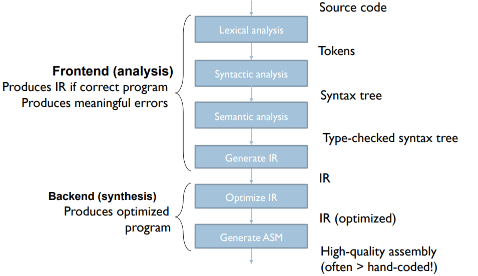
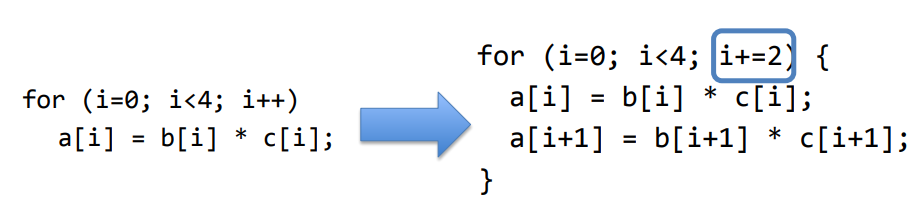
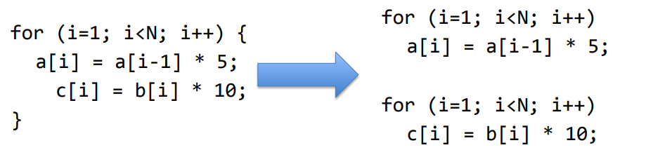
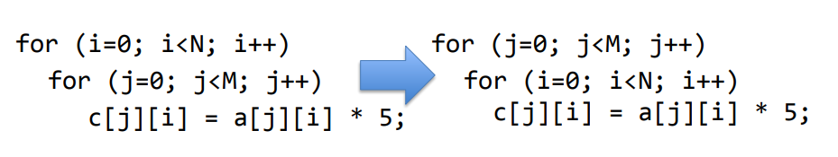
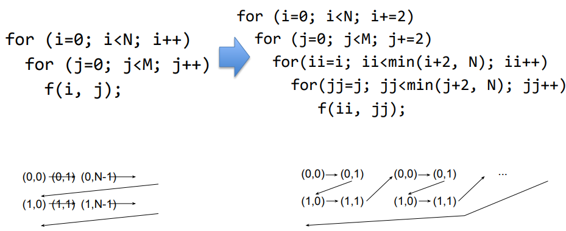
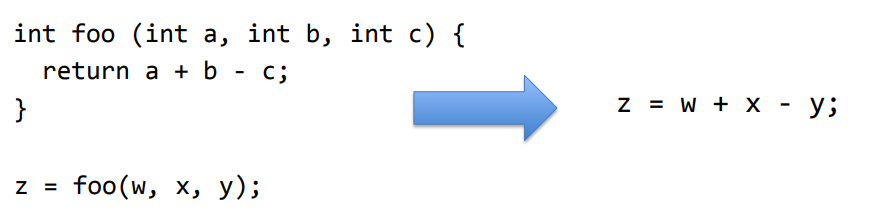

Compilation and Optimizations
- Chapter 5 (5.1 - 5.7)
Intro to Compilers
Overview
- Programs are divided into compilation units
- Provide degree of modularity
- Each commonly has main file (.c) for source code
- Header files (.h) declare public interfaces of units
- Each unit is compiled separately to relocatable object code
- Allows creation of object-code libraries
- A linker combines these into an executable, resolving references between units
- A loader sets up the executable program in memory and initialises data areas, prior to the program being run
Declaration vs Definition
- Declaration: inform the compiler of the existence of a variable or function
void swap(int *a, int *b); // in .h file
- Definition: provide function body; allocate memory for local variables
void swap(int *a, int *b) { // in .c file
int temp = *a;
*a = *b;
*b = temp;
}
Compilers Frontend
Compilers
• Bare minimum for a functional compiler

• Good compilers o Produce meaningful errors on incorrect programs o Produce fast, optimized code
Detailed Compilation Flow

The C pre-processor
- Includes - imports header files
#include <stdio.h>
#include "A.h"
- Text substitution, e.g. define constants
#define NAME value
- Macros (inline functions)
#define MAX(X,Y) (X>Y ? X : Y) // careful with macros!
- Conditional compilation
#ifdef DEBUG
printf("Debugging message");
#endif
// $ gcc -DDEBUG
- Inserts header files to C source code file in response to
#include <stdio.h>
#include "A.h"
- Performs macro substitution
- E.g. In response to
- All references to CONST in source will be replaced by 5
- E.g. In response to
- No type checking or anything, just a direct textual replacement
- To examine the output gcc pre-processor
$ gcc –E file.c –o output.c
Anatomy of a Modern Compiler

Frontend (analysis)
• Read source program • Break it up into basic elements • Check correctness, report errors • Translate to generic intermediate representation (IR)
Back-end (synthesis)
• Optimize IR • Translate IR to ASM • Optimize ASM
Frontend Stages
• Lexical analysis (scanning): Source -> List of tokens • Syntactic analysis (parsing): Tokens -> Syntax tree • Semantic analysis (mainly, type checking)
Intermediate Representation
• Internal compiler language that is: ○ Language-independent ○ Machine-independent ○ Easy to optimize • Why yet another language? ○ Assembly does not have enough info to optimize it well ○ Enables modularity and reuse

Data flow graph (DFG)
- Represents flow of data inside “basic block”
- Basic blocks
- Code with one entry one exit
- May have a branch at the end, not before
- Does not represent control.
- Describes the minimal ordering requirements on operations.
- Static Single Assignment is employed to ease optimizations
Static Single Assignment (SSA)
- If a variable is assigned more that once in the source code:
- SSA keeps only the first assignment
- The rest of the assignments are renamed to temporary variables

DFG and Partial Orders

Optimizations
Control-Data Flow Graph (CDFG)
- Represents control and data flow
- Nodes: basic blocks
- Edges: branches between basic blocks


IR Optimization
- Machine independent optimizations
- Code optimizations independent of the target architecture
- e.g. dead code elimination, constant propagation, constant folding etc.
- Machine dependent optimizations
- Specifically aim at target architecture
- May not be applicable directly across different architectures
- e.g. Instruction selection, register allocation etc.
- Perform a set of passes over the CFG
- Each pass does a specific, simple task over the CFG
- By repeating multiple simple passes on the CFG over and over, compilers achieve very complex optimizations
- Example optimizations:
- Dead code elimination: Eliminate assignments to variables that are never used, or basic blocks that are never reached
- Constant propagation: Identify variables that are constant, substitute the constant elsewhere
- Constant folding: Compute and substitute constant expressions
Code Generation
- Translate optimized IR to assembly
- Register allocation: Map variable to registers
- If #variables > #registers, map some to memory and load/store when needed
- Translate each assignment to instruction
- Some assignments may require more than one instruction if ISA does not have operations
- Emit each basic block: labels, assignments and branches
- Lay out basic blocks, remove superfluous branches
- ISA and CPU specific optimization
- E.g. reorder instructions if possible
Summary: Modern Compilers

Loop Transformations
- Why is it important
- Programs spends lots of time in loops
- Goal
- Reduce loop overhead
- Increase opportunities for other optimizations
- Improve pipeline and memory system performance
#1: Loop Unrolling
- Duplicates loop body ‘n’ times and adjust loop bounds
- Reduces number of comparisons/branches to test loop exit • Branches are big performance bottleneck in hardware
- Increases loop body size • Enables more optimizations • More register pressure

#2: Loop Fusion
-
Combines two (or more) loops into one
-
Pros:
- May improve data locality
- Reduces loop overhead
- May enable better instruction scheduling
-
Cons:
- May hurt data locality
- May hurt I-cache hit rate

#3: Loop Distribution/Fission
-
Divides a loop into two (or more) loops
-
Pros:
- Enables optimizations: 2nd loop is parallel loop
- Reduces register pressure
-
Cons:
- Increases loop overhead

#4: Loop Interchange
- Switches the order of loops in a loop nest
- Can improve data locality and parallelism

#5: Loop Tiling
- Breaks a loop into a set of nested loops
- Each inner loop operates on a subset of data
- Changes memory access pattern: Can improve locality

Function Inlining and Register Allocation
Procedure/Function Inlining
- Replaces call with the body of the callee (called function)
- Programmer can ask compiler to inline a function
- C provides inline keyword
- Compiler itself can inline a function if deemed beneficial

- Function calls can be costly
- Direct costs: arguments and results passing, call/return (branch) instructions, stack frame maintenance etc
- Indirect costs: breaks intra-procedural analysis to inter-procedural analysis (which is more complex)
- Inlining removes these costs
- Downside
- Can increases code size
- Can reduce instruction cache hit rate
Register Allocation
- Registers temporarily hold variables
- Aim: Allocate registers to variables such that memory accesses are minimized
- Good register allocation is key to performance as memory accesses can be costly (imagine cache misses)
- Compilers analyze lifetime of variables for register allocation
- Programmers could hint which variables to keep in registers
- C supports register keyword
- Modern compilers just ignore it!
- Some variables always need to be in memory
- volatile keyword provides this functionality
- Still brought to a register for using the value
Register Allocation with Graph Coloring
- Edges between variable that are live at the same time
- Represent each register with a color
- Color the nodes with as few colors as possible
- No edge must share a color
- NP-complete
- Compilers use heuristics to reach a good solution
Instruction Selection
- IR code can be translated to a number instruction sequences depending types of instructions in ISA
- IR expressions are represented as graphs (CDFG)
- Find the best template for expression
- The template should minimize the chosen cost metric
Assembler and linker
- Generate machine instructions (binary) from assembly instructions (symbolic)
- One to one translation (usually)
- Translate labels into addresses
- Handle pseudo-ops
- Two pass approach
- First pass: Generate symbol table
- Second pass: resolve labels and generate machine instructions
Symbol Table
- Generating symbol table:
- Scan the file to collect labels and their addresses
- Addresses are generally relative to the first instructions in the file
Object File
- Output of assembler
- Several standards
- ELF (Unix), ECOFF (Windows), Mach-O (OS X)
- Object file includes
- Symbol table
- Program code (.text segment)
- Data (.data segment)
- Information about relocatable parts
- Debug data (references to source files)
Linker
- Takes multiple object files and libraries and generates one executable file
- Combines all object file segments (text, data)
- Determines start address for all modules
- Combines all symbol tables
- Resolves all symbols
- Transforms relative address to absolute addresses
- Produces an error if cannot find a label/symbol in merged symbol table
Dynamic Linking
- Most operating systems can link modules at load time
- e.g. shared libraries (.so on linux platforms)
- Saves storage space